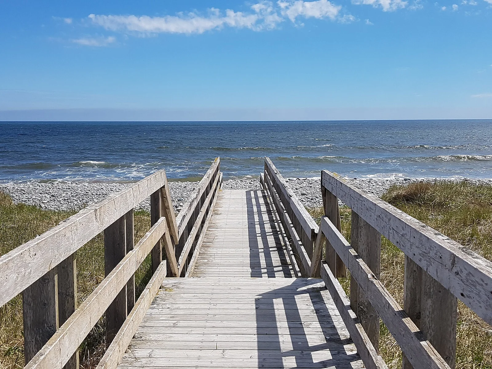

Lawrencetown Beach
Nouvelle-Écosse, Canada · surf

Plage de galets et point break de la côte atlantique canadienne. On y surfe même en hiver, en combinaison épaisse.
- Lieu
- Nouvelle-Écosse, Canada
- Niveau
- Intermédiaire
- Activités
- surf
- Type d'eau
- Mer / océan
- Coordonnées
- 44.64, -63.34 (position approximative du secteur)
Dangers à connaître
- Eau glaciale en hiver.
- Fond de galets et rochers.
Le conseil d'Ocean Buddy
En hiver, une 6/5 avec gants et chaussons est indispensable.
Ouvrir dans Ocean Buddy Télécharger sur l'App Store
Source : Fiche Ocean Buddy · septembre 2026 · à vérifier localement.